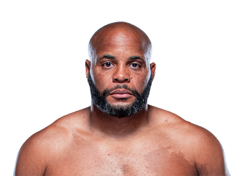

Daniel Cormier es considerado uno de los peleadores más completos en la historia de las artes marciales mixtas. Nació el 20 de marzo de 1979 en Louisiana, Estados Unidos. Antes de iniciar su carrera en MMA, Cormier fue un luchador olímpico de alto nivel que representó a Estados Unidos en los Juegos Olímpicos.

Gracias a su gran base en lucha libre, Cormier desarrolló un estilo dominante basado en derribos, control en el suelo y un fuerte clinch. Con el tiempo también mejoró notablemente su striking, lo que lo convirtió en un peleador extremadamente completo.
Durante su carrera en la UFC logró convertirse en campeón de dos divisiones diferentes: peso semipesado y peso pesado, algo que solo unos pocos peleadores han logrado en la historia de la organización. También protagonizó rivalidades muy conocidas dentro del deporte.
Después de retirarse de la competición profesional, Daniel Cormier continuó ligado al deporte trabajando como comentarista y analista de la UFC.
Peso semipesado y peso pesado
Más de 20 victorias en MMA y campeón en dos divisiones de la UFC.